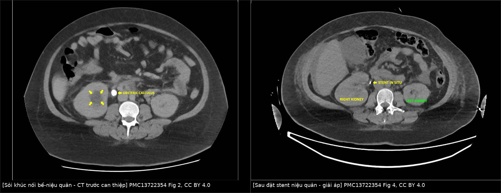
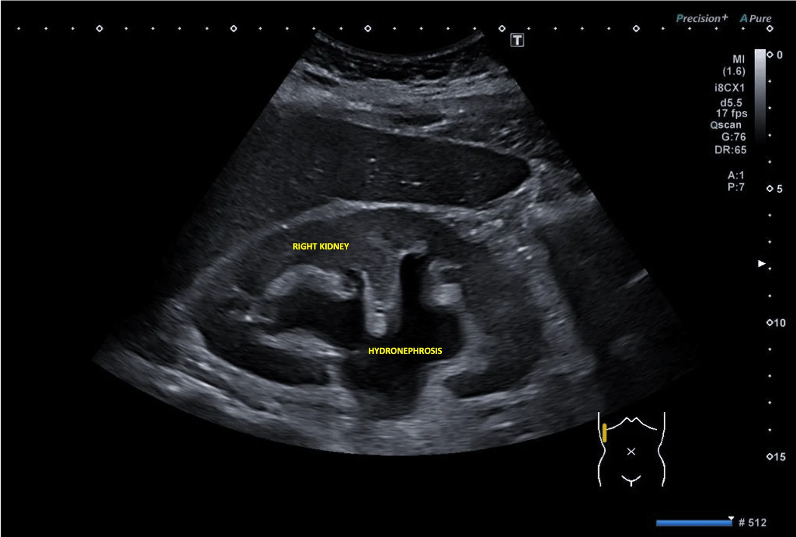
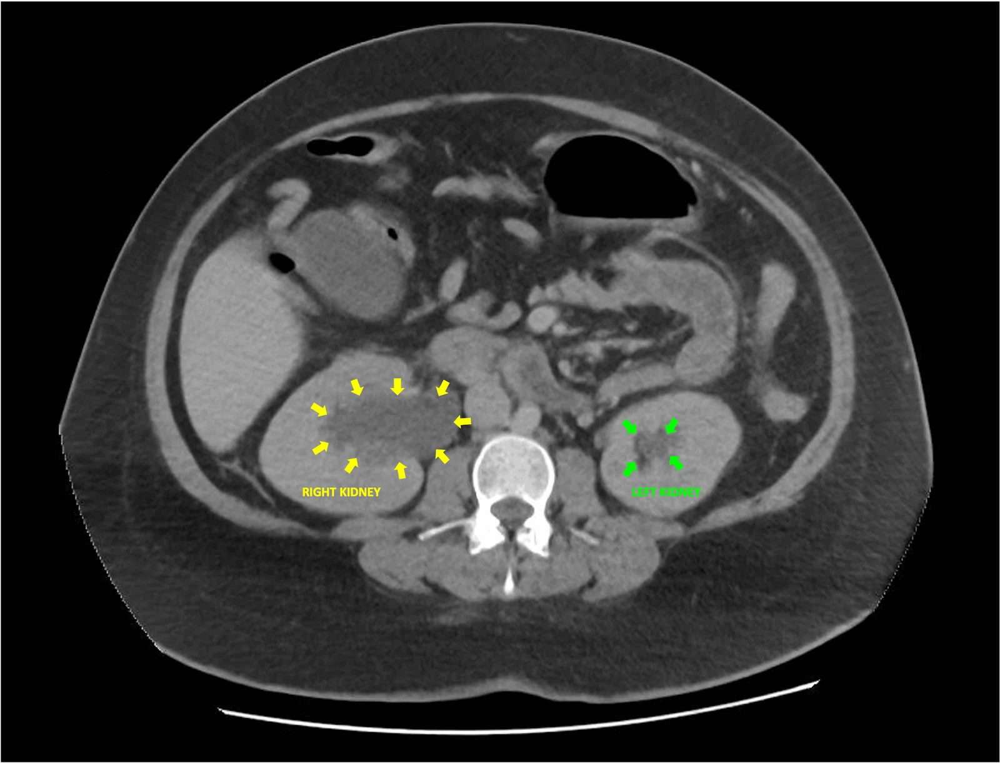
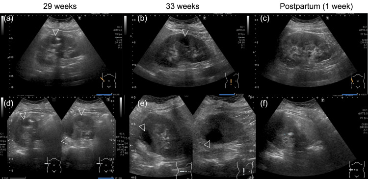
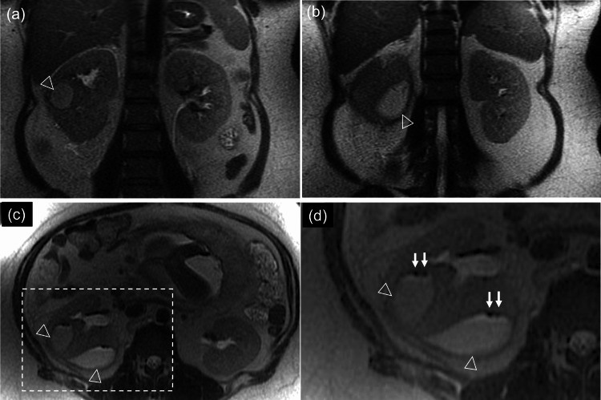
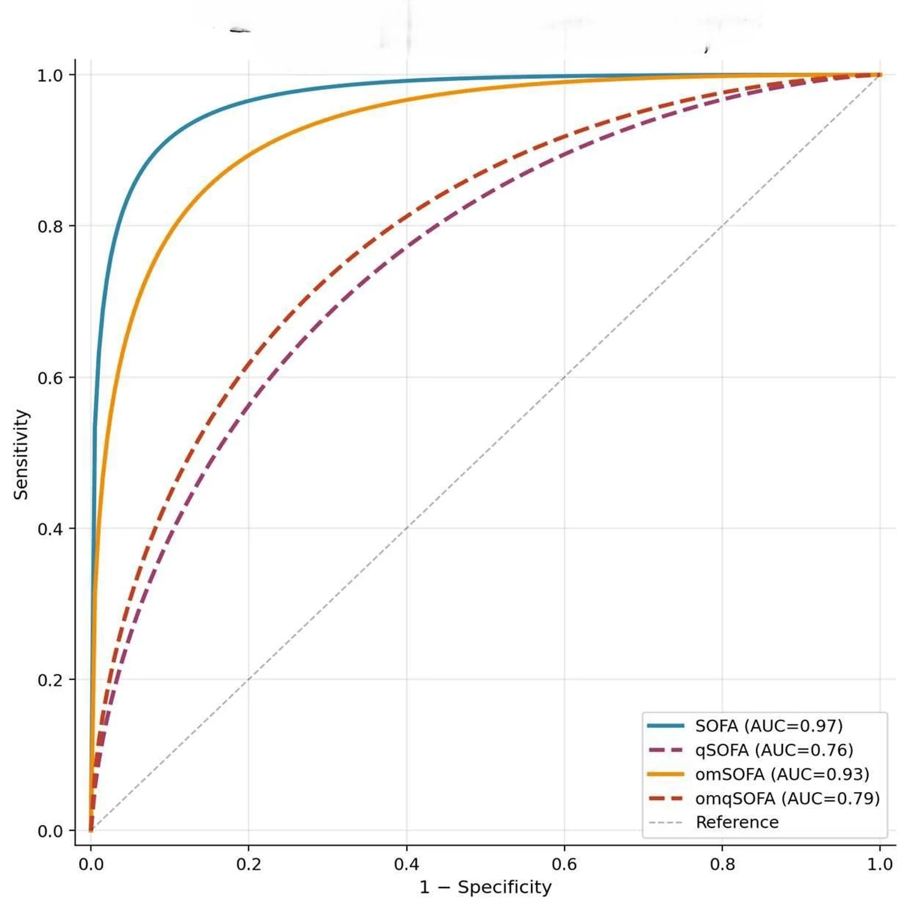
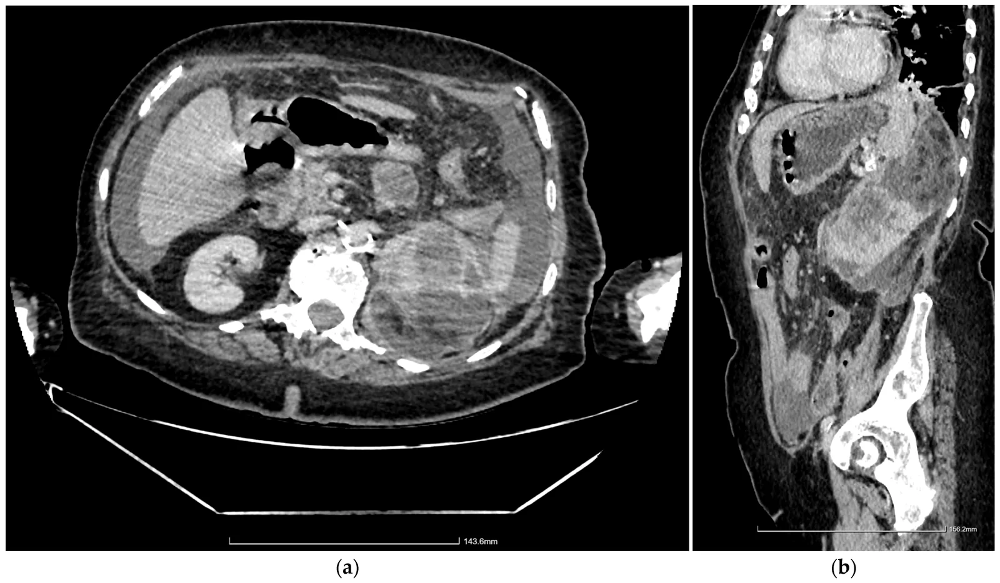

1924 — Sốc nhiễm khuẩn từ đường niệu ở thai phụ (urosepsis): nhận diện trong 1 giờ, giải áp trong 6–12 giờ, và vì sao qSOFA không đủ / Urosepsis in pregnancy
Tags: pattern:soc-nhiem-khuan pattern:u-nuoc pattern:tac-nghen pattern:viem vung:than vung:nieu-quan vung:thai-nhi protocol:sieu-am-bung protocol:MRI-khong-can-tu protocol:CT-lieu-thap score:qSOFA score:SOFA score:Huang-Tseng
Mức chắc chắn (certainty): tổng hợp y văn (literature synthesis) — ghép 2 đoàn hệ sản–niệu (PMC10673142: 66 urosepsis/164 nhiễm khuẩn niệu trên; PMC10744995: 183 thai), 1 nghiên cứu điểm số ở 188 thai phụ nguy cơ cao (PMC13650759), 1 tổng quan hệ thống về thời gian giải áp (PMC12693273), 1 tổng quan ứ mủ thận (PMC13703377), 2 ca nguyên văn có ảnh (PMC13722354, PMC11693407) và dữ liệu 86/110 thai phụ không sốt từ bài 1921 (PMC6864490). Ngưỡng nào nguồn không đủ ghi "chưa rõ".
Câu chốt: Urosepsis ở thai = nhiễm khuẩn niệu trên + rối loạn chức năng cơ quan, và nguyên nhân chết người thường là ổ tắc không được giải áp, không phải vi khuẩn kháng thuốc. Hai con số quyết định: không giải áp → tử vong 19,2% vs 8,82% khi có giải áp; trễ ≥ 2 ngày → aOR tử vong 1,29 (PMC12693273). Chẩn đoán điểm số: SOFA AUC 0,97 nhưng qSOFA chỉ 0,76; qSOFA âm không loại trừ, vì 86/110 thai phụ viêm thận–bể thận nhập viện không sốt (PMC13650759, PMC6864490).
1. Tổng quan bệnh học – cơ chế hình ảnh
1.1 Vì sao thai phụ dễ tiến triển từ nhiễm niệu sang sốc (TẠI SAO)
- Ổ nhiễm khởi đầu: vi khuẩn đường ruột đi ngược dòng → viêm thận–bể thận cấp (acute pyelonephritis, APN) ở 1–2% thai kỳ; tái phát 20–25% (PMC11693407). E. coli chiếm 80–90%; Klebsiella, Proteus, Enterococcus đứng sau.
- Bước ngoặt là TẮC NGHẼN: ứ nước sinh lý do progesterone + tử cung chèn ép làm giảm dòng nước tiểu; nếu thêm sỏi hoặc hẹp khúc nối, áp lực trong đài–bể tăng → thiếu máu nhu mô + mủ ứ dưới áp lực → vi khuẩn và nội độc tố vào máu → sốc nhiễm khuẩn. Vì vậy kháng sinh đơn thuần không đủ khi còn tắc: ổ mủ kín không có nguồn thoát.
- Định nghĩa Sepsis-3: sepsis = rối loạn chức năng cơ quan đe dọa tính mạng do đáp ứng viêm mất kiểm soát, với SOFA tăng ≥ 2 điểm; sốc nhiễm khuẩn = cần vận mạch để giữ MAP ≥ 65 mmHg và lactate > 2 mmol/L dù đã bù dịch đủ. qSOFA (nhịp thở ≥ 22, huyết áp tâm thu ≤ 100 mmHg, tri giác GCS < 15) chỉ là công cụ sàng lọc tại giường, không phải tiêu chuẩn chẩn đoán.
- Vì sao thai làm điểm số "lệch": bình thường thai kỳ đã tăng nhịp tim 10–20 lần/phút, giảm huyết áp 5–15 mmHg, bạch cầu 12–16 × 10⁹/L (có thể tới 18), creatinin giảm còn 0,4–0,6 mg/dL do tăng lọc cầu thận, thiếu máu pha loãng. Vì vậy một thai phụ "bình thường" theo ngưỡng người không mang thai có thể đã có rối loạn chức năng cơ quan.
- Không sốt không có nghĩa nhẹ: trong 110 thai phụ nhập viện vì viêm thận–bể thận, 86 người (78%) không sốt lúc vào; điểm cảnh báo sớm sản khoa dương tính dự báo nhập ICU với aOR 16,54 (1,29–212,5) (PMC6864490, dẫn qua bài 1921). Đây là lý do phải đo lactate, creatinin, và đánh giá toàn thân, không chờ sốt cao.
1.2 Vì sao hình ảnh trông như vậy (vật lý từng phương thức)
- Siêu âm: thấy ứ nước, thành bể thận dày, sỏi tăng âm + bóng lưng sạch, mảnh vụn trong đài–bể; nhưng không phân biệt được ứ nước sinh lý với tắc chỉ bằng độ giãn, và sỏi 1/3 dưới niệu quản thường bị bỏ sót vì ruột/khối thai. Trong ca 30 tuần dưới đây, siêu âm chỉ thấy ứ nước phải vừa, không thấy sỏi — CT mới phát hiện sỏi khúc nối bể–niệu quản (PMC13722354).
- CT: khí = −1000 HU, mỡ = −40 đến −120 HU, dịch mủ 10–30 HU (xem bài 1923). CT liều thấp không cản quang đủ để thấy sỏi cản quang, khí trong nhu mô, mức độ ứ nước, dải mỡ; CT có cản quang thì nephrographic 80–100 giây cho viền áp-xe/hoại tử.
- MRI: T2 HASTE/SSFSE cho thấy ứ nước, mảnh vụn, ổ mủ; DWI/ADC phân biệt mủ đặc (ADC thấp) với nước tiểu tự do (ADC cao); khí là trống tín hiệu. MRI là lựa chọn khi cần tránh tia, nhưng không thấy sỏi trực tiếp.
- Vì sao lactate quan trọng hơn bạch cầu: lactate phản ánh giảm tưới máu mô và chuyển hóa yếm khí, không phản ánh trực tiếp số vi khuẩn; lactate 3,7 → 11 mmol/L trong ca dưới đây là dấu hiệu sốc đang tiến triển dù huyết áp còn "tạm ổn" (102/51 mmHg).
1.3 Ngưỡng định lượng nằm lòng
| Chỉ số | Con số | Nguồn |
|---|---|---|
| APN ở thai | 1–2%; tái phát 20–25% | PMC11693407 |
| Urosepsis trong nhiễm khuẩn niệu trên | 66/230 (28,7%) | PMC10673142 |
| Yếu tố nguy cơ urosepsis (đa biến) | thiếu máu OR 2,62 (1,22–5,63); ứ nước độ 2–3 OR 6,58 (2,80–15,46); sốt > 38 °C OR 11,61 (4,80–28,07) | PMC10673142 |
| So sánh urosepsis vs không sepsis | bạch cầu 18.191 vs 14.350/mm³; CRP 142,7 vs 72,8; creatinin 0,77 vs 0,59 mg/dL | PMC10673142 |
| Can thiệp niệu | 87,9% vs 36%; chuyển sản khoa vì thai suy 22,7% vs 1,2%; stent di trú 6,1% vs 0,6% | PMC10673142 |
| Kết cục thai (đoàn hệ 183) | ối vỡ non aOR 5,59 (2,02–15,40); sinh non aOR 2,47 (1,15–5,33); nhập NICU tăng | PMC10744995 |
| Điểm số ở 188 thai nguy cơ cao (15 tử vong mẹ) | SOFA AUC 0,97 (cắt ≥ 10: Se 93,3%/Sp 89,7%); omSOFA 0,93; omqSOFA 0,79; qSOFA 0,76 | PMC13650759 |
| qSOFA | cắt ≥ 2: Se 100%/Sp 54,1%, PPV 15,8%, NPV 100% | PMC13650759 |
| Không giải áp | tử vong 19,2% vs 8,82%; OR 2,6 (1,9–3,7) | PMC12693273 |
| Trễ giải áp | ≥ 2 ngày: aOR 1,29 (1,03–1,63); > 24 giờ: OR ~2 | PMC12693273, PMC13703377 |
| Giải áp ≤ 48 giờ | tử vong 0,16% vs 0,47% (OR 0,43; p = 0,044) | PMC12693273 |
| Giải áp sớm và thời gian nằm | đặt stent ≤ 6 giờ: 35,6 vs 71,6 giờ (p = 0,01); ≤ 10 giờ: 45,7 vs 82,4 giờ (p = 0,04) | PMC12693273 |
| Sốc nhiễm khuẩn trong các loạt | 20,8% và 33,3% | PMC12693273 |
| Urosepsis sau giải áp | 18,7%; liên quan ứ mủ thận + procalcitonin cao | PMC12693273 |
| EPN | tử vong ~25%; 95% ĐTĐ; 25–75% tắc nghẽn | PMC11693407 |
| Ca sốc thực tế | lactate 3,7 → 11 mmol/L, pH 7,20, HCO₃ 11, creatinin 139 → 618 µmol/L | PMC13722354 |
2. Mẫu hình + chẩn đoán phân biệt theo vị trí (gamut)
- A. Thai phụ sốt + đau hông: APN không biến chứng · urosepsis · ứ mủ thận · áp-xe thận/quanh thận · EPN · sỏi tắc · viêm túi thừa đài thận.
- B. Thai phụ tụt áp: sốc nhiễm khuẩn niệu · sốc nhiễm khuẩn ối/chorioamnionitis · sốc mất máu (nhau bong non, vỡ tử cung, chửa ngoài) · sốc tim (bệnh cơ tim chu sản) · thuyên tắc ối · sốc phản vệ.
- C. "Giãn ≠ tắc": ứ nước sinh lý (hai bên, phải > trái, thuôn nhẵn, còn tia nước tiểu, RI bình thường) · tắc do sỏi/hẹp (điểm tắc đột ngột, RI ≥ 0,72) · chèn ép từ khối tiểu khung · thai là "khối" chèn ép lớn nhất.
- D. Bắt chước "sốt sau sinh/trong thai": viêm nội mạc tử cung · huyết khối tĩnh mạch buồng trứng (POVT) · viêm ruột thừa · viêm túi mật · áp-xe cơ chậu · nhau bong non (đau + shock nhưng không sốt).
Gợi nhớ: "TẮC – MỦ – SỐC – NGUỒN" — luôn hỏi có tắc không, có ổ mủ không, đã sốc chưa, và nguồn đã được giải áp chưa. Câu cuối là câu quyết định tử vong.
3. Bảng so sánh phân biệt (ma trận đối chiếu)
| Thực thể (entity) | Hình ảnh điển hình | Chốt vào (rule-in) | Chốt loại (rule-out) | Gợi ý xác nhận |
|---|---|---|---|---|
| Urosepsis | Ứ nước + sỏi/tắc + dải mỡ quanh thận; có thể ổ mủ/khí | Lactate > 2 + MAP < 65 hoặc SOFA ≥ 2 + ổ niệu | Lactate bình thường, không rối loạn cơ quan → nhiễm khuẩn niệu đơn thuần | Cấy máu/niệu, lactate, creatinin, CT/MRI |
| APN không biến chứng | Thận to, striated nephrogram, dải mỡ, không ổ dịch | Sốt + đau hông + dải giảm ngấm hình nêm | Ổ dịch có viền/khí → áp-xe/EPN | CT nephrographic; cấy; đáp ứng 48–72 giờ |
| Ứ mủ thận (pyonephrosis) | Đài–bể giãn chứa dịch đặc, mảnh vụn, thành dày | Dịch đài–bể đậm độ cao + tắc nghẽn | Dịch trong, không mảnh vụn → ứ nước | Giải áp + cấy dịch; CT/MRI |
| EPN | Khí trong nhu mô (HU ≈ −1000), phá hủy nhu mô, có thể lan quanh thận | Khí trong NHU MÔ trên CT không cản quang | Khí chỉ trong đài–bể → ứ mủ | Huang–Tseng; kiểm soát đường huyết; dẫn lưu/mổ khi độ cao |
| Viêm màng ối–chorioamnionitis | Thai, nước ối đục, thành tử cung dày, khí trong buồng tử cung (hiếm) | Sốt + đau tử cung + dịch ối hôi + thai suy | Không có tổn thương tử cung/ối → ổ niệu | Siêu âm thai; CRP; cấy ối; theo dõi tim thai |
| Huyết khối tĩnh mạch buồng trứng | Ổ huyết khối trong tĩnh mạch buồng trứng, dấu hiệu nhắm (target), lan tĩnh mạch chủ dưới | Sốt sau sinh + đau hông + huyết khối tĩnh mạch | Không huyết khối, có ổ niệu → urosepsis | CT có cản quang; Doppler; kháng đông |
| Viêm ruột thừa | Ruột thừa > 7 mm, không nén được, mỡ quanh | Điểm đau khu trú + ruột thừa > 7 mm | Ổ niệu rõ + sỏi tắc → urosepsis | MRI không cản từ (thai); siêu âm |
| Sốc mất máu | Tử cung căng, dịch ổ bụng, Hb tụt, không sốt | Mạch nhanh + Hb tụt + dịch ổ bụng | Sốt + ổ niệu + lactate cao → nhiễm khuẩn | Siêu âm cấp cứu; theo dõi Hb |

Trái: CT bụng — sỏi khúc nối bể–niệu quản phải (mũi tên vàng), đài–bể giãn. Phải: sau đặt stent niệu quản, stent tại chỗ, giảm ứ nước. Nguồn: PMC13722354, Figs. 2 & 4, CC BY 4.0; ghép bằngtools/make_composite.py (letterbox, không crop).
3.1 Vì sao "giãn" không đủ để gọi là tắc
Trong ca 30 tuần, siêu âm đầu tiên chỉ thấy ứ nước phải vừa, không thấy sỏi, và bác sĩ đã cân nhắc "ứ nước sinh lý". Vài giờ sau bệnh nhân sốt 40,2 °C, mạch 140, thở 34, lactate 3,7 — CT mới lộ sỏi khúc nối bể–niệu quản. Bài học: khi lâm sàng nặng lên, "giãn" phải được coi là tắc cho tới khi chứng minh ngược lại, và siêu âm bình thường không loại trừ sỏi.
3.2 Vì sao không được chờ "đủ tiêu chuẩn sốc"
Bệnh nhân trên có huyết áp 102/51 mmHg lúc đầu — vẫn trong ngưỡng "bình thường" của thai, nhưng lactate 3,7 và creatinin 139 µmol/L (gấp đôi baseline 68) đã là rối loạn chức năng cơ quan. Nếu chờ tụt áp mới hành động, đã bỏ qua cửa sổ vàng để giải áp.
4. Protocol chụp + hệ phân độ/điểm chuẩn hóa
4.1 Bó 1 giờ (sepsis bundle) ở thai phụ nghi urosepsis
- ABC + monitor: SpO₂, huyết áp, nhịp tim, nước tiểu, lactate mao mạch/máu tĩnh mạch; đặt đường truyền lớn.
- Cấy máu 2 bộ + cấy nước tiểu TRƯỚC kháng sinh, nhưng không chậm quá 45 phút; nếu đang sốc, kháng sinh ngay sau khi lấy mẫu.
- Kháng sinh phổ rộng trong 1 giờ khi có sốc/nghi sepsis: piperacillin–tazobactam 4,5 g mỗi 8 giờ (ca dưới đây) hoặc cefepime; chỉnh theo chức năng thận; tránh nitrofurantoin khi > 36 tuần, tránh TMP-SMX quý I và quý III, tránh fosfomycin trong sốc.
- Bù dịch tinh thể 30 mL/kg theo SSC 2021, nhưng ở thai chia thành bolus 250–500 mL và đánh giá lại sau mỗi bolus vì nguy cơ phù phổi; norepinephrine là vận mạch đầu tay để giữ MAP ≥ 65 mmHg.
- Giải áp ổ tắc trong 6–12 giờ (không chờ 24 giờ): dẫn lưu thận qua da (PCN) hoặc stent niệu quản ngược dòng; nếu thất bại/không tiếp cận được → PCN.
- Theo dõi thai: monitor tim thai liên tục; không mổ lấy thai chỉ để "điều trị nhiễm khuẩn" — mổ khi có thai suy/thai chết lưu/chorioamnionitis hoặc chỉ định sản khoa.
- ICU khi cần vận mạch, thở máy, lọc máu, DIC; tránh ergometrine (co mạch vành) nếu cần co tử cung.
4.2 Chọn đường giải áp: PCN hay stent?
- Stent ngược dòng: ít xâm lấn, không để ống ra ngoài, nhưng có thể thất bại khi sỏi lớn/niệu quản gập, và di trú 6,1% trong một đoàn hệ (PMC10673142). Đặt stent ≤ 6 giờ giảm thời gian nằm 35,6 vs 71,6 giờ (người lớn tắc niệu quản nhiễm trùng, không riêng thai) (PMC12693273).
- PCN: giải áp chắc chắn hơn khi mủ đặc/niệu quản không tiếp cận, nhưng ống ra ngoài, dễ tắc/đổi, và tăng dùng ICU trong một số loạt (có confounding by indication) (PMC12693273).
- Không có thử nghiệm đủ lớn chứng minh một bên ưu việt trong hệ thống nhiễm trùng; yếu tố quyết định là THỜI GIAN, không phải dụng cụ (PMC12693273, PMC13703377).
- Sau giải áp: cấy dịch đài–bể (không chỉ nước tiểu bàng quang — trong loạt 73 bệnh nhân tắc niệu quản do sỏi, cấy dịch đài–bể dương 58,9% nhưng cấy nước tiểu giữa dòng chỉ dương 28,9%, tức âm 71,1%) và xuống thang kháng sinh theo kết quả (PMC13703377).
4.3 Phân độ EPN — Huang–Tseng (dùng để chọn can thiệp)
| Độ | Khí ở đâu | Hướng xử trí |
|---|---|---|
| 1 | Chỉ đài–bể thận | Kháng sinh + giải áp nếu tắc |
| 2 | Trong nhu mô, chưa ra quanh thận | Kháng sinh ± dẫn lưu; theo dõi sát |
| 3A | Lan khoang quanh thận | Dẫn lưu ± can thiệp ngoại |
| 3B | Lan khoang cạnh thận/tạng lân cận | Can thiệp ngoại sớm |
| 4 | Hai bên hoặc thận độc nhất | Cân nhắc cắt thận/lọc máu |
4.4 Sơ đồ quyết định (Mermaid)
flowchart TD
A[Thai phụ sốt, đau hông, tụt áp hoặc lactate > 2] --> B[ABC + lactate + cấy máu và nước tiểu]
B --> C[Kháng sinh phổ rộng trong 1 giờ + bù dịch từng bolus]
C --> D[Siêu âm thận + Doppler]
D --> E{Có tắc hoặc ứ mủ hoặc ổ dịch?}
E -->|Không rõ| F[MRI không cản từ hoặc CT liều thấp]
E -->|Có| G[Giải áp trong 6-12 giờ: stent hoặc PCN]
F --> G
G --> H{Đáp ứng sau 6-12 giờ?}
H -->|Không| I[Kiểm tra vị trí stent, chuyển PCN, dẫn lưu ổ mủ, ICU]
H -->|Có| J[Theo dõi thai + kháng sinh theo cấy + xuống thang]
I --> J
J --> K{Thai suy hoặc chorioamnionitis?}
K -->|Có| L[Mổ lấy thai vì chỉ định sản khoa]
K -->|Không| M[Tiếp tục điều trị, không mổ vì nhiễm khuẩn đơn thuần]
4.5 Điểm số nào dùng?
| Điểm | Cấu trúc | AUC ở thai nguy cơ cao | Dùng thế nào |
|---|---|---|---|
| SOFA | 6 hệ cơ quan (hô hấp, đông máu, gan, tim mạch, thần kinh, thận) | 0,97 (cắt ≥ 10) | Tốt nhất để phân tầng nguy cơ/tử vong, nhưng cần xét nghiệm |
| omSOFA | SOFA hiệu chỉnh cho thai | 0,93 (cắt ≥ 9) | Thay thế khi có công cụ |
| qSOFA | 3 dấu hiệu lâm sàng | 0,76 (cắt ≥ 2) | Sàng lọc nhanh: NPV 100%, nhưng Sp 54% → nhiều dương giả; âm không loại trừ |
| omqSOFA | qSOFA hiệu chỉnh thai | 0,79 | Sàng lọc tại giường; chưa thay được SOFA |
Lưu ý phương pháp: nghiên cứu điểm số có 15 tử vong mẹ/188, cắt điểm dò và đánh giá trên cùng một đoàn hệ, không có so sánh thống kê cặp đôi — nên coi là gợi ý, không phải chuẩn xác nhận (PMC13650759).
5. Biến thể bình thường và cạm bẫy
- Cạm bẫy 1 — "ứ nước sinh lý" làm chậm chẩn đoán: ca 30 tuần chỉ có ứ nước vừa, không thấy sỏi trên siêu âm; CT mới thấy sỏi khúc nối (PMC13722354). Siêu âm bình thường không loại trừ tắc, nhất là sỏi 1/3 dưới.
- Cạm bẫy 2 — qSOFA âm: qSOFA có Sp 54,1% — một nửa bệnh nhân không đủ điểm vẫn có thể tử vong; NPV 100% chỉ đúng trong đoàn hệ nhỏ này. Ở thai, SOFA/omSOFA mới là công cụ phân tầng.
- Cạm bẫy 3 — không sốt: 78% (86/110) thai phụ viêm thận–bể thận nhập viện không sốt; đừng chờ sốt để cấy/kháng sinh (PMC6864490).
- Cạm bẫy 4 — creatinin "bình thường": thai tăng lọc cầu thận nên creatinin 0,9 mg/dL có thể đã là AKI. So với baseline (ca trên: 139 vs 68 µmol/L), không so với ngưỡng người không mang thai.
- Cạm bẫy 5 — bạch cầu "bình thường": thai bình thường đã 12–16 × 10⁹/L; bạch cầu không tăng không loại trừ sepsis. Dùng lactate, creatinin, CRP/PCT, tri giác, huyết áp.
- Cạm bẫy 6 — cấy nước tiểu âm: ổ mủ kín hoặc đã dùng kháng sinh → cấy bàng quang âm; cấy máu và cấy dịch đài–bể mới có giá trị (PMC9207609, PMC13703377).
- Cạm bẫy 7 — kháng sinh trước cấy: làm mất kết quả; nhưng không trì hoãn kháng sinh quá 45 phút khi sốc. Lấy mẫu nhanh rồi tiêm.
- Cạm bẫy 8 — trễ giải áp: trễ ≥ 2 ngày aOR 1,29; không giải áp tử vong 19,2% vs 8,82% (PMC12693273). Kháng sinh không thay được giải áp.
- Cạm bẫy 9 — stent "đã đặt là xong": stent có thể gập, tắc, di trú 6,1%; nếu sốt tiếp diễn sau 6–12 giờ, kiểm tra vị trí và chuyển PCN (PMC10673142).
- Cạm bẫy 10 — mổ lấy thai để "điều trị nhiễm khuẩn": mổ không loại bỏ ổ niệu; chỉ mổ vì thai suy/chorioamnionitis hoặc chỉ định sản khoa, rồi vẫn phải giải áp niệu quản (ca trên: mổ lấy thai xong mới đặt stent).
- Cạm bẫy 11 — NSAID che sốt và hại thận: giảm đau bằng NSAID có thể che triệu chứng và làm nặng AKI trong sepsis; ưu tiên paracetamol, dùng opioid thận trọng.
- Cạm bẫy 12 — EPN "phải mổ ngay": ca EPN Huang II ở 29 tuần khỏi với kháng sinh đơn thuần, thai sinh ở 39 tuần (PMC11693407); không phải mọi EPN đều cắt thận.
6. Tự lượng giá — Blind Quiz
Ca 1 — 26 tuổi, G5P3, thai 30 tuần, đau hông phải dữ dội; vài giờ sau sốt 40,2 °C, mạch 140, thở 34, lactate 3,7 mmol/L. CT bụng:


- Hỏi: (1) bất thường chính? (2) vì sao huyết áp 102/51 vẫn là sốc? (3) thứ tự xử trí?
Bấm để hiện đáp án (findings + chẩn đoán)
- Findings: sỏi khúc nối bể–niệu quản phải gây ứ nước độ cao, dải mỡ quanh thận; sau đó stent niệu quản được đặt, ứ nước giảm (ảnh phải).
- Vì sao vẫn là sốc: huyết áp "bình thường" của thai (giảm 5–15 mmHg) + lactate 3,7 + creatinin 139 vs baseline 68 = rối loạn chức năng cơ quan; sau đó tụt 92/41, mạch 160–170, pH 7,20, HCO₃ 11, lactate 11.
- Xử trí: cấy máu/niệu → piperacillin–tazobactam 4,5 g q8h trong 1 giờ → bù dịch từng bolus → giải áp trong 6–12 giờ; vì thai suy + mẹ sốc → mổ lấy thai category 1 rồi đặt stent; hậu phẫu ICU, thở máy, vận mạch, lọc máu, điều trị DIC; cấy Klebsiella pneumoniae; mẹ và bé sống.
- Nguồn ảnh: PMC13722354, Figs. 2 & 4, CC BY 4.0 (ghép letterbox).
Ca 2 — 32 tuổi, thai 29 tuần 4 ngày, ĐTĐ type 2, sốt 39,0 °C, đau hông phải; siêu âm và MRI lúc 30 tuần:


- Hỏi: (1) mô tả tổn thương; (2) chẩn đoán và phân độ; (3) có buộc phải mổ/dẫn lưu không?
Bấm để hiện đáp án (findings + chẩn đoán)
- Findings: nhiều ổ T2 tăng tín hiệu trong nhu mô thận phải (mũi tên), bên trong có ổ trống tín hiệu (mũi tên đầu) = khí; thận to, dải mỡ quanh thận.
- Chẩn đoán: viêm thận sinh khí (EPN) + nhiều ổ áp-xe, Huang độ II (khí trong nhu mô, chưa lan quanh thận); cấy nước tiểu E. coli; bạch cầu 26.300/µL, CRP 27,15 mg/dL.
- Xử trí: đổi kháng sinh sang piperacillin–tazobactam, theo dõi; không dẫn lưu/mổ vì đáp ứng; nằm viện 52 ngày, sinh mổ ở 39 tuần, bé 3.382 g, Apgar 8/9; ổ áp-xe tan sau sinh.
- Phân biệt: khí chỉ trong đài–bể = ứ mủ thận (nhẹ hơn); khí trong nhu mô = EPN. EPN không đồng nghĩa cắt thận — phân độ quyết định.
- Nguồn ảnh: PMC11693407, Fig. 3, CC BY 4.0.
Ca 3 — So sánh 4 điểm số trên 188 thai phụ nguy cơ cao (15 tử vong mẹ):

- Hỏi: (1) điểm nào phân tầng tốt nhất? (2) vì sao không dùng qSOFA để loại trừ? (3) giới hạn của hình?
Bấm để hiện đáp án (findings + chẩn đoán)
- Findings: SOFA AUC 0,97 (0,94–0,99), cắt ≥ 10: Se 93,3%, Sp 89,7%, PPV 42,4%, NPV 99,4%; omSOFA 0,93; omqSOFA 0,79; qSOFA 0,76 (0,68–0,84), cắt ≥ 2: Se 100%, Sp 54,1%, PPV 15,8%, NPV 100%.
- Vì sao không dùng qSOFA để loại trừ: Sp thấp → rất nhiều dương giả; nhưng NPV 100% trong đoàn hệ này chỉ có nghĩa "nếu âm thì ít nguy cơ" trong mẫu nhỏ, không chuyển được sang mọi thai phụ. SOFA/omSOFA mới phân tầng tốt.
- Giới hạn: chỉ 15 tử vong, cắt điểm dò và đánh giá cùng bộ dữ liệu, không so sánh thống kê cặp đôi → coi là giả thuyết, cần ngoại kiểm.
- Nguồn ảnh: PMC13650759, Fig. 1, CC BY 4.0.
Ca 4 — CT không cản quang: thận phải mất cấu trúc, đài–bể giãn chứa dịch đặc, có mức khí–dịch; thận trái bình thường:

- Hỏi: (1) chẩn đoán? (2) khí nằm ở đâu? (3) vì sao phải giải áp khẩn?
Bấm để hiện đáp án (findings + chẩn đoán)
- Findings: thận phải to, phá hủy nhu mô, đài–bể giãn chứa dịch đặc + mảnh vụn, có khí trong hệ đài–bể và lan quanh thận; dải mỡ quanh thận.
- Chẩn đoán: ứ mủ thận (pyonephrosis) biến chứng, có khí; đây là cấp cứu niệu khoa — mủ dưới áp lực + nhiễm trùng huyết.
- Vì sao giải áp khẩn: không giải áp tử vong 19,2% vs 8,82%; trễ ≥ 2 ngày aOR 1,29 (PMC12693273). Kháng sinh đơn thuần không thoát được mủ.
- Nguồn ảnh: PMC13703377, Fig. 3, CC BY 4.0 (ca 74 tuổi, không phải thai — dùng làm hình thái; ghi rõ để không suy diễn lâm sàng).
Bài liên quan chéo
- 500 – Tổng quan hệ Vú & Sản phụ khoa
- 1921 – Nhiễm khuẩn niệu không triệu chứng & viêm thận–bể thận cấp ở thai phụ
- 1923 – Áp-xe thận & áp-xe quanh thận ở thai phụ
- 1818 – Sỏi niệu quản ở thai phụ: siêu âm – MRI, dẫn lưu tạm và khi nào lấy sỏi
- 1817 – Đau bụng cấp ở thai phụ: protocol MRI không cản từ
- 1623 – Huyết khối tĩnh mạch buồng trứng sau sinh (bắt chước sốt sau sinh)
- 1908 – Thiếu máu mạc treo cấp và mạn (đau bụng + toan chuyển hóa)
Không dùng để chẩn đoán độc lập khi chưa có người hướng dẫn.